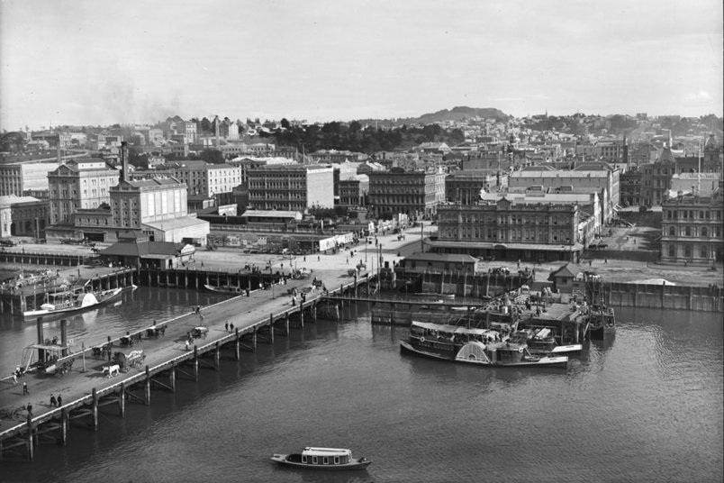
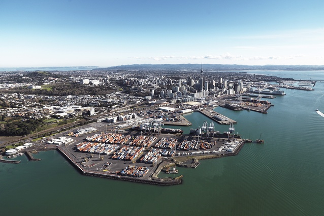
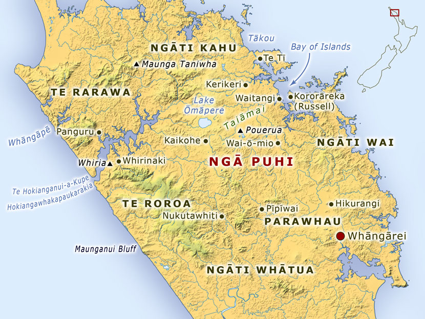
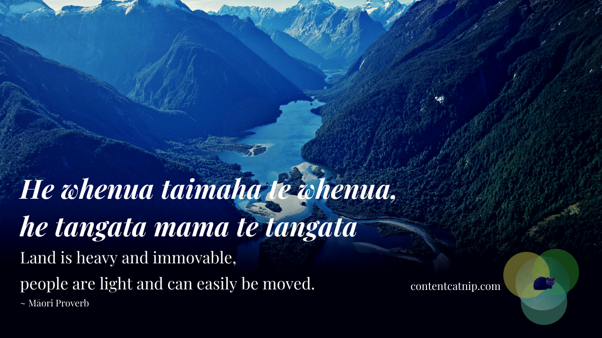

Ngati Whatua had many subtribes(4), these subtribes helped with daily survival and a way of managing their land. The four subtribes were, Te Roroa, Te Uri-o-Hau, Te Taou and Ngati Whatua-o-Orakei. These subtribes were a staple in the success of Ngati Whatua as they would keep the growth of Ngati Whatua land sufficient and maintain their leadership in the area. Compared to Ngapuhi, Ngati Whatua have far less subtribes, with Ngapuhi having around 150 different subtribes compared to Ngati Whatua’s 4 sub tribes.
Ngati Whatua had many conflicts during their time, but some were more notable than others. Hongi Hika was one of the main conflicts, this conflict happened in the early 1800s. Ngati Whatua’s conflict with Hongi Hika had not just impacted Ngati Whatua but the whole Tamaki region.
During the 1840s the Treaty of Waitangi was signed, this treaty brought together over 500 Maori chiefs. In the mid 1840s there was a major increase in violence between Maori and Pakeha, this was heavily due to Maori fighting back for their land that was lost to the Ngati Whatua trade. Over the next decades the economy would steadily rise within the tribes, these tribes would then sell their crops to new towns such as Wellington.
Ngati Whatua only returned to the Tamaki region after Hongi Hika had died. The remaining Ngapuhi members were killed by an ambush from Ngati Whatua welding hand held weapons compared to the long range muskets Ngapuhi were armed with. With this return Ngati Whatua had regained mana whenua over the Tamaki region.


It is greatly important to learn about our history and where we stand today. Our history can be easily decline in people whom are knowledgeable about the history of Ngati Whatua. This can correlate to the Maori language decline from the 1900s to 1960s however, the language is on a steady rise in recent years.
The Maori proverb "He whenua taimaha te whenua, he tangata mama te tangata" translates to Land is heavy and immovable, people are light and can easily be moved. This proverb shows how people can be moved with us but land will stay sentimental and will always be waiting for you. We can see this in Ngati Whatua with them returning to the Tamaki region claiming back their land that they lost but regained.


The Europeans saw major profits and business in New Zealand and mainly from the land in Tamaki. In the 1830s Christian missionary work began, with this taking effect Maori schools started to learn about the Christian message, some tribes started getting more involved with the Europeans around now. Before the Treaty of Waitangi Europeans began trading with the people of Tamaki, with them then signing the Treaty of Waitangi in 1840, with over 500 Maori chiefs signing the treaty.
Tamaki in the 1800s was crippled with tribe wars such as the muskets wars in the early 1800s run by Hongi Hika. This war deserted Tamaki from the immense fear that Hongi Hika had, Hongi Hika's men were named ‘Musket Raiders’ after they would search for remaining men, to then kill and eat the dead as they believed it made them stronger. This war came to an end after Hongi Hika shot himself in the leg which led to his death. By the 1860s European settlers were far greater in power and strength, leading to George Grey's invasion into the Waikato region, this led to a loss in 1,000 Maori men and 12,000km^2 of land, which led to white settlement in the area.